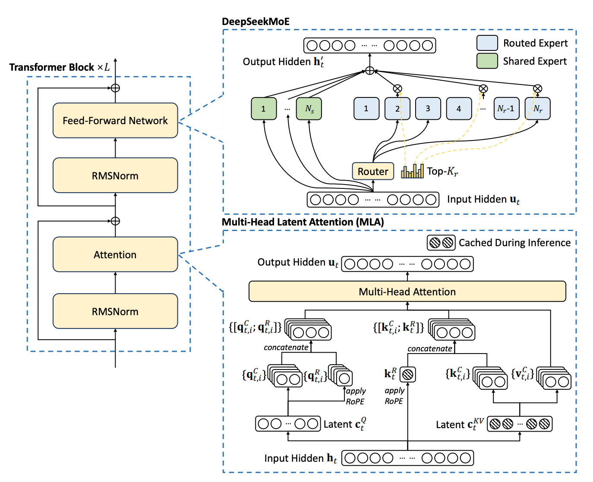

An infra-oriented diagram of the DeepSeek-V3 architecture
Before we can calculate any rooflines or look at profiles, we need a basic working understanding of the DeepSeek-V3 architecture. The classic path here would be to read the DeepSeek-V3 Technical Report and then look at some of the implementations of DeepSeek-V3: either the official inference reference or a trainable implementation in torchtitan or Megatron (config).
However, there are some aspects where I think the pre-existing literature could be clearer. For example, the official DeepSeek architecture diagram looks like this:

I personally find the MLA diagram quite difficult to parse! The difficulty is that the diagram focuses on the latent spaces you are projecting between (it doesn't even have any explicit indication where a matrix multiply is happening), whereas as an infra person I'm more interested in knowing what kernels I am going to be running and what the more expensive operations are (the ones we should be optimizing, c.f., Amdahl's law.) You could get this information by pointing a coding agent at a training codebase. But I think a schematic diagram is still quite helpful, especially for visualizing data dependencies.
So, below is a diagram (created with assistance from Fable) which lays out the entire main-model architecture of DeepSeek-V3 in one page. Later, we'll make variations of this diagram as we compute rooflines, but for now, use it as reasonably complete birds-eye view of DeepSeek-V3. For space reasons, we only show the MoE block by default, but you can switch the view to the dense block by pressing "dense block/FFN".)
There are a few things I'm hoping to convey in this diagram:
- The bold boxes are entirely matrix multiplies (or attention). In roofline analysis, we often approximate FLOPs by only considering matmuls, as the quadratic cost of doing matmuls means they tend to dominate the overall FLOPs of a model. It's OK to squint your eyes and ignore the rest of the boxes!
- Unlike what you would see in a mathematical description of MLA, we have condensed the number of matmul blocks by applying some conventional horizontal fusions, e.g., fusing the K and V matmuls together. Any serious training implementation will have applied these fusions, as they are easy to implement and improve your matmul efficiency. It's good to know to expect five GEMM kernels in the MLA region!
- If you click the sizes button (sizes: ) you can toggle between seeing the internal structure versus the topline number that has it multiplied out. For example, the parenthetical numbers in grey (29M) all denote the parameter count associated with an operation. On the ffn gate/up, you can either see that it is (29M ×256) (the size of a single expert multiplied by the number of routed experts) or (7.5B) (the total routed experts parameter count of a single layer). In the topline view you can see that FFN has an order of magnitude more parameters than any of the other operations in the transformer block.
- The intermediate activations are all named (e.g., · attn proj out), and any that are saved for backwards are bold orange with an arrow (e.g., ↓ q latent · 1536), where the arrow points to the operation whose backwards needs that activation. On occasion multiple operations save the same tensor for backwards (drawn as ⇅). Note that this diagram overstates how many activations you'd actually typically save for backwards--more on this in a future post.
Computing the parameter count
Here's a simple first use of the diagram: let's use it to compute DeepSeek-V3's parameter count. In the copy of the diagram below, in the bottom left I've added a tally of all the parameters; you can hover over rows to see specifically which boxes contribute parameters. You can see the inactive parameter count is dominated by the FFN expert weights!1
That's it for this post. These diagrams aren't earth shaking but we are going to return to them again and again as we start doing analyses. Next time, we'll use the diagrams to better understand the memory usage of DeepSeek-V3.
1 I used Fable and Sol to cross-check the
parameter counts against the official published DeepSeek-V3
checkpoint index. In our parameter count, we excluded the MTP module (stored as layer 61;
11,610,061,056 parameters unique to it, since it shares the
embedding and output head with the main model), and the FP8
weight_scale_inv tensors, which are quantization metadata rather
than model parameters. Everything that remains totals to exactly
671,026,419,200 parameters, matching the advertised
671B total.
Separately, we need to define "active parameter" for the purpose
of this calculation. We count the parameters on the computation path
executed for one token: eight routed experts plus the shared expert, the
full router, and the full output head. Vocabulary matrices are not treated
consistently across the MoE literature, so we follow DeepSeek's own
corrected accounting: the input embedding is a lookup and is not
counted, while the output head counts in full--this gives exactly
36,625,618,432 activated parameters, matching the
advertised 37B active.
↩